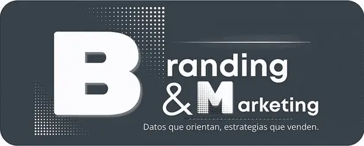
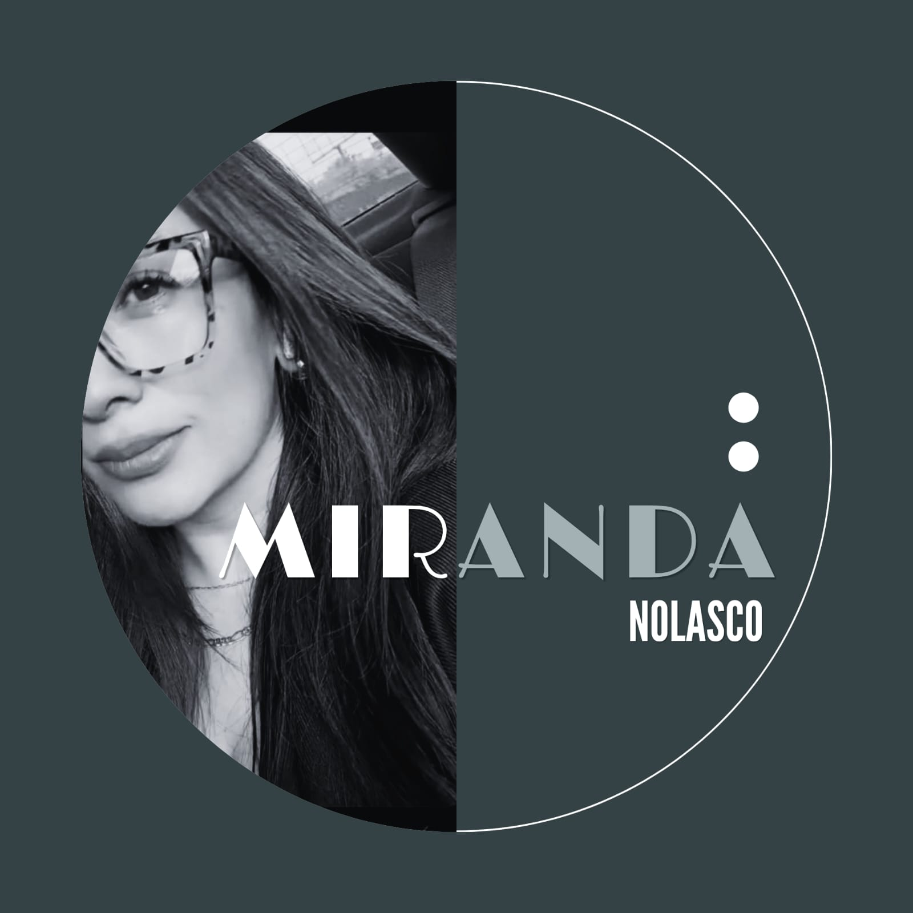
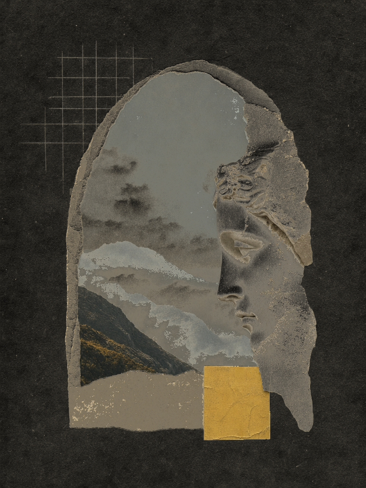
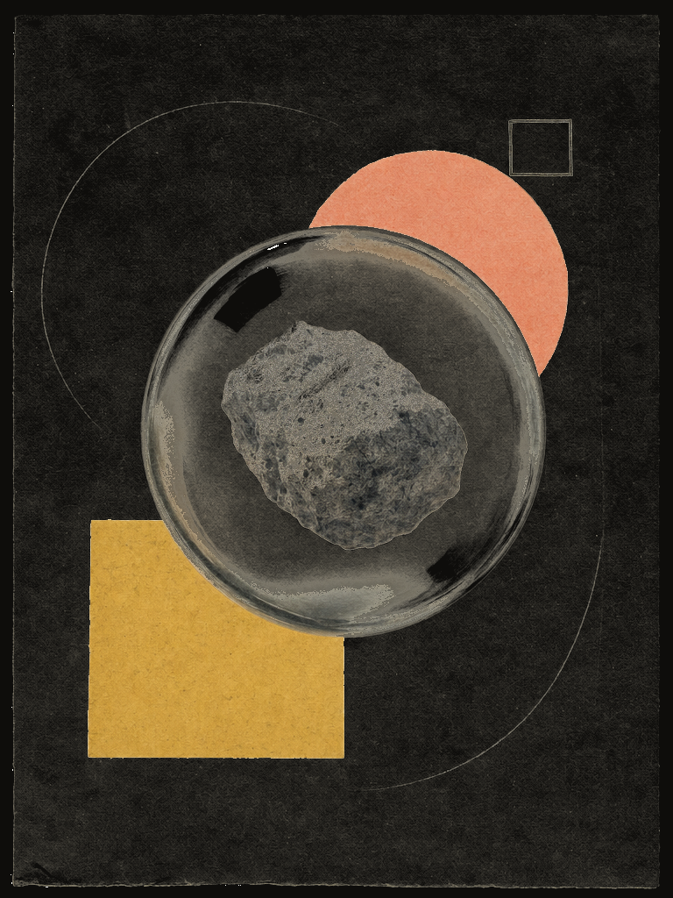
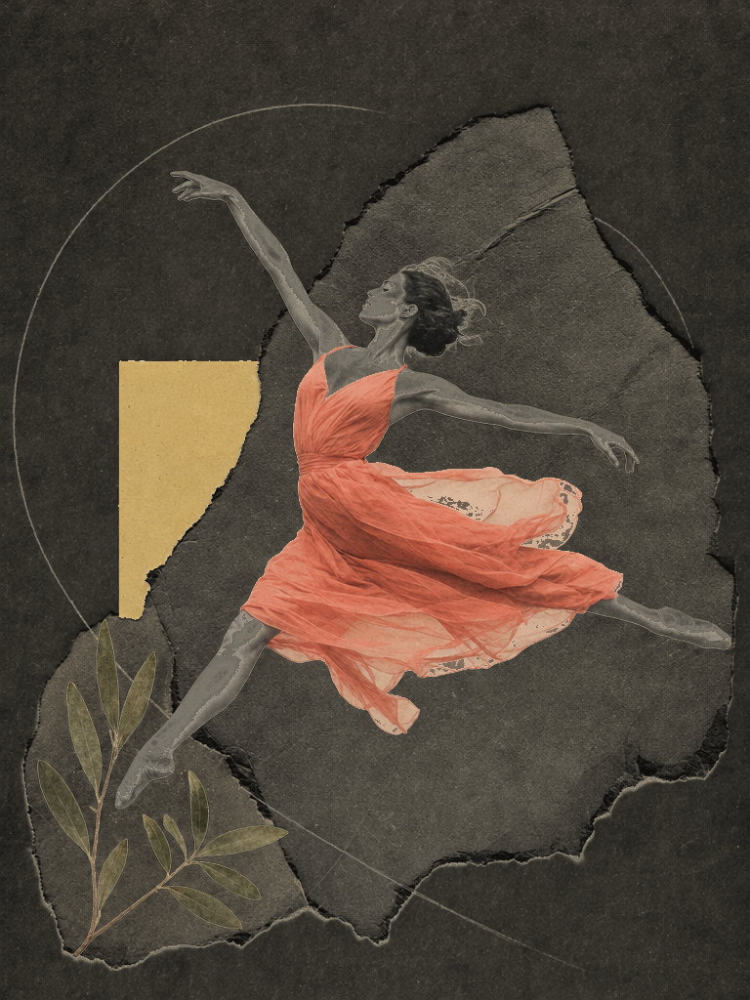
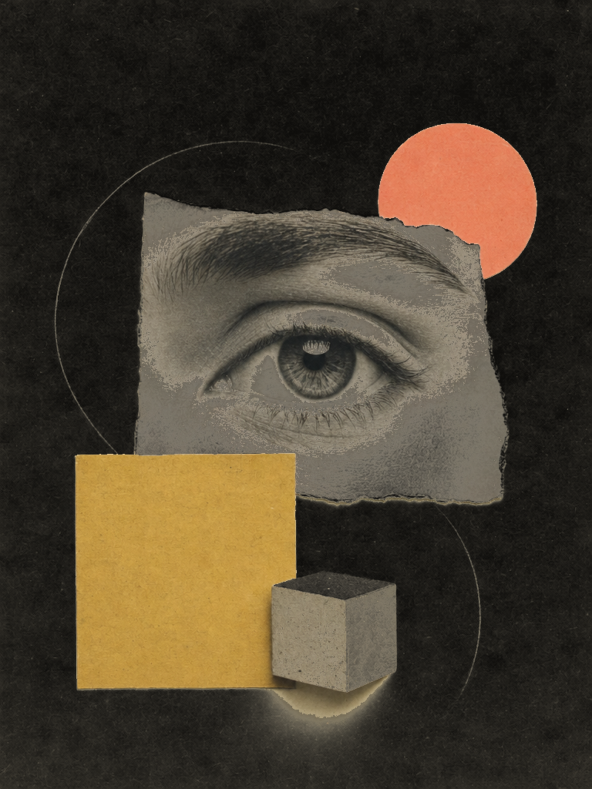
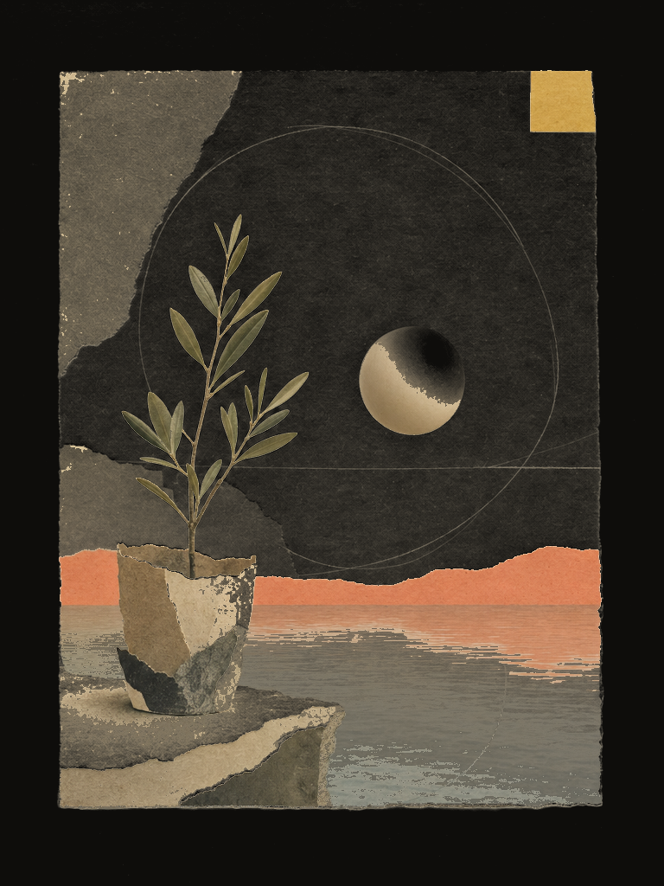

B&M Branding & Marketing integra investigación de mercados, desarrollo web y redes sociales en un solo sistema: entendemos a tu cliente con datos, construimos tu plataforma digital y cuidamos la conversación que convierte cada contacto en una oportunidad de venta.
↳ Cada mes sin datos es presupuesto decidido a ciegas: mide primero, luego invierte.
B&M nació de la integración de Braulio y Miranda: la investigación de mercados y el desarrollo web dejaron de ser servicios aislados para convertirse en un solo sistema. Hoy estudiamos a tus clientes, construimos tu plataforma digital y cuidamos tu conversación en redes - con datos que orientan cada decisión y estrategias pensadas para vender.
Conoce a los fundadoresCofundador - Investigación de Mercados
Su trayectoria está en la parte analítica de la agencia: estudios cualitativos y cuantitativos, benchmarking, análisis de precios, NPS y perfiles de comprador. Es quien se asegura de que cada recomendación de B&M esté respaldada por evidencia de mercado, no por intuición.

Cofundadora - Desarrollo Web & Marketing Digital
Su trayectoria está en la parte creativa y técnica: sitios y landing pages orientados a conversión, estrategia de contenidos, redes sociales y campañas digitales. Es quien convierte los hallazgos de investigación en experiencias de marca que sí venden.
Ayudar a las marcas a conocer a sus clientes y a su competencia para construir estrategias digitales que generen ventas reales y sostenibles.
Que cada pyme y marca que crezca con nosotros tome decisiones comerciales con la misma calidad de información que una gran empresa.
Rigor en los datos, transparencia en los procesos, obsesión por el resultado del cliente y creatividad con propósito.
Cada pilar funciona por separado; juntos forman un sistema completo: entender el mercado, construir la plataforma digital y sostener la conversación que vende.
Estudios cuanti y cuali, benchmarking, precios y NPS, market share, buyer persona y storytelling de empresa.
Sitios y landing pages, formularios que convierten leads, banners, SEO/SEM, e-commerce y catálogos digitales.
La decisión comercial más costosa es la que se toma sin información. Este pilar pone números y contexto sobre tu cliente, tu competencia y tu precio.
Entrevistas, sesiones a profundidad y encuestas que revelan qué piensa, siente y necesita tu cliente.
Comparamos tu oferta contra la competencia para encontrar huecos, ventajas y oportunidades reales.
Determinamos el precio que el mercado está dispuesto a pagar y medimos la lealtad de tus clientes con Net Promoter Score.
Cuantificamos tu participación de mercado y construimos el perfil del comprador ideal que debe hablar toda tu comunicación.
Convertimos tu historia, valores y propuesta de valor en un relato que conecta con el cliente y te diferencia.
No hacemos sitios de vitrina: cada página, formulario y banner está diseñado para que el visitante avance hasta el contacto o la compra.
Sitios y páginas de aterrizaje con estructura, contenido y diseño orientados a un objetivo de negocio claro.
Formularios que capturan la información correcta y convierten visitas en contactos calificados.
Piezas digitales para campañas, promociones y temporadas, alineadas a tu identidad de marca.
Posicionamiento orgánico y campañas de búsqueda para que te encuentren quienes ya buscan lo que vendes.
Tiendas en línea y catálogos listos para vender, con una experiencia de compra clara y medible.
Tu marca no solo publica: escucha. Gestionamos la conversación diaria y las estrategias que llevan tráfico a tu punto de venta.
Administración profesional de tus perfiles: biografías, formatos, horarios y mejores prácticas de cada red.
Producción de piezas en los formatos que cada red premia, con guiones enfocados en tu buyer persona.
Calendarios semanales planificados: qué publicar, cuándo y con qué objetivo - sin improvisar.
Gestión de mensajes, comentarios y reseñas a tiempo, para convertir la interacción en confianza.
Tráfico a punto de venta, posicionamiento, reconocimiento de marca y manejo de reputación online.
Cada etapa es iterativa y medible: los datos orientan cada decisión y la estrategia se ajusta con lo que el mercado responde.
Diagnóstico y briefing: entendemos tu negocio, tu cliente y tu competencia antes de proponer cualquier cosa.
Estudios de mercado, benchmarking, precios y buyer persona: la base factual sobre la que se decide todo lo demás.
Estrategia y ejecución: web, campañas, contenido y parrillas alineados al perfil de tu comprador ideal.
NPS, market share, leads y tráfico al punto de venta: medimos lo que importa, aprendemos y ajustamos.

Cómo construir el perfil de tu comprador ideal con datos reales de mercado y usarlo en cada pieza de comunicación.

Qué es el Net Promoter Score, cómo medirlo sin molestar a nadie y qué hacer con el resultado.

Estructura, formularios estratégicos y llamadas a la acción que sí generan contactos calificados.

Planear una semana de posteos, reels y respuestas sin improvisar ni quemar la cuenta.

Cómo conectamos investigación, web y redes para llevar tráfico real a un punto de venta.
Cuéntanos qué quieres lograr: entender tu mercado, lanzar tu web, ordenar tus redes - o montar el sistema completo. Completa el formulario o escríbenos directo.
Cada propuesta incluye alcance, tiempos e inversión estimados, respaldada por diagnóstico.
Gracias por escribirnos. Te contactaremos para agendar una conversación sobre tu proyecto.